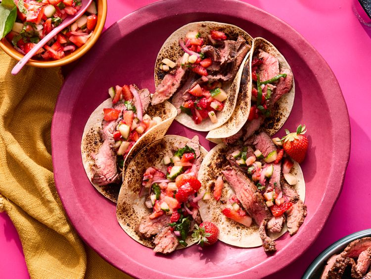

Strawberry Barbecue Beef

Description
This strawberry barbecue beef flank steak is basted with roasted strawberry sauce as it grills, then served with
a bright, fresh strawberry basil salsa.
Ingredients
- 8 ounces strawberries, hulled and halved, plus 1 pound strawberries, hulled and chopped, divided
- 2 tablespoons water
- 2 tablespoons ketchup
- 2 teaspoons light brown sugar
- 2 teaspoons plus 2 tablespoons chopped fresh basil, divided, plus more for garnish
- 2 teaspoons plus 2 tablespoons white wine vinegar, divided
- 2 teaspoons minced garlic, divided
- 1/8 teaspoon ground white pepper
- 1/8 teaspoon plus 1 1/4 teaspoon salt, divided
- 1/4 teaspoon freshly ground black pepper
- 1 1/4 to 1 1/2 pounds beef flank steak
- 1 cucumber, peeled, seeded, and chopped
- 2 tablespoons finely chopped red onion
Steps
- Preheat the oven to 400 degrees F (200 degrees C). Line the bottom and sides of a rimmed baking sheet with
parchment paper to catch all the cooking liquid. Arrange halved strawberries on baking sheet.
- Roast in the preheated oven until fragrant, soft, and caramelized, about 20 minutes.
- For sauce, transfer roasted strawberries and their juices to a small saucepan. Stir in water, ketchup, brown
sugar, 2 teaspoons basil, 2 teaspoons vinegar, 1 teaspoon garlic, white pepper, and 1/8 teaspoon salt. Bring
to a boil. Reduce heat to medium-low and simmer, stirring occasionally, 20 minutes. Remove from heat, let
cool slightly, then transfer sauce to a food processor or blender. Blend until smooth.
- Preheat an outdoor grill to medium-high heat, 375 to 400 degrees F (190 to 200 degrees C). Oil grill grates.
Sprinkle 1/4 teaspoon salt and the black pepper over steak. Grill steak, covered, 10 minutes. Turn steak and
brush lightly with sauce. Continue cooking, brushing with sauce every 3 minutes, about 10 minutes more. An
instant-read thermometer inserted into thickest part should register 130 degrees F (54 degrees C) for
medium-rare or 140 degrees F (60 degrees C) for medium.
- Transfer steak to a cutting board; cover loosely with foil and let rest 10 minutes. (After resting,
temperature should register 135 degrees F (57 degrees C) for medium-rare or 145 degrees F (65 degrees C) for
medium.)
- For salsa, toss together chopped strawberries, cucumber, onion, the remaining 2 tablespoons each basil and
vinegar, and the remaining 1 teaspoon each garlic and salt in a medium bowl. Chill salsa, covered, up to 4
hours.
- Thinly slice steak. Serve with strawberry salsa and garnish with additional basil.